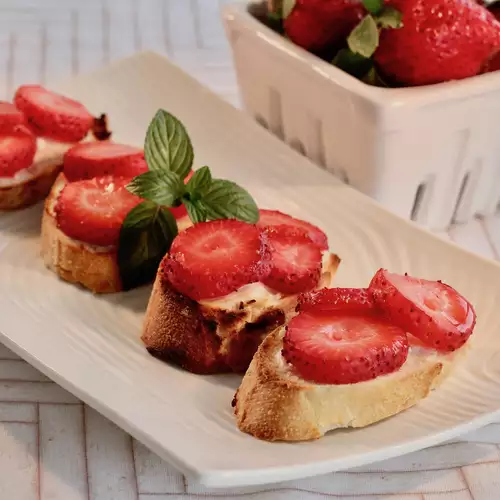

Lasagna recipe

Description
This is a delicious variation of the popular tomato based appetizer. The strawberries are warm and sweet and the sugar is caramelized and crunchy! Your guests will love it!
Ingredients
- 24 slices French baguette
- 1 tablespoon butter, softened
- 2 cups chopped fresh strawberries
- ¼ cup white sugar, or as needed
Steps
- Preheat your oven's broiler. Spread a thin layer of butter on each slice of bread. Arrange bread slices in a single layer on a large baking sheet.
- Place bread under the broiler for 1 to 2 minutes, just until lightly toasted. Spoon some chopped strawberries onto each piece of toast, then sprinkle sugar over the strawberries.
- Place under the broiler again until sugar is caramelized, 3 to 5 minutes. Serve immediately.
Nutrition Facts
Per Serving: 120 calories; protein 3.7g; carbohydrates 23.1g; fat 1.6g; cholesterol 2.5mg; sodium 202.1mg.